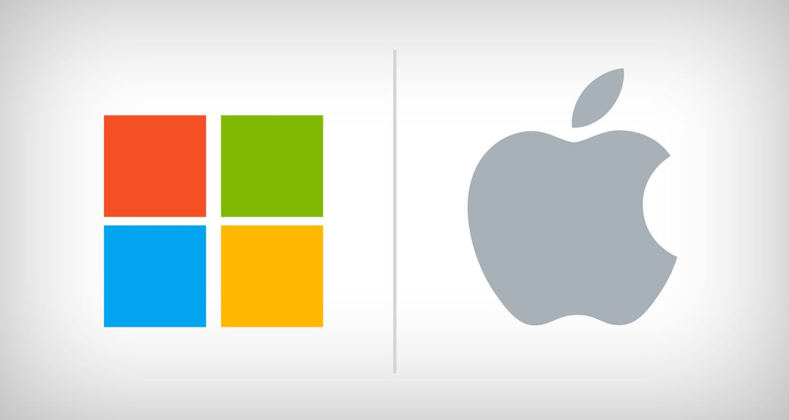

Microsoft VS Apple OS adoption
When piracy helps a Software sell better


Half for Microsoft and half for Apple was what would be today the repartition of users base of the operating system of each of these startups that initiated the personal computer revolution. By willing to protect its operating system and making it enclosed into a very well-designed computer Apple lost the benefit of the network effect and its inherent positive feedback. I used to hear from Seth Godin that the enemy of Art is not piracy but obscurity. I don't think that apple is an obscure brand but I just learned the effect of piracy on software adoption by reading a very good study done by ariel Katz while I was doing research about the network effect on software adoption because of this data about windows adoption I am working on. And with these data about the adoption of past windows versions, I clearly see the pattern with two different windows versions. That’s the same pattern that would happen if Apple’s operating system was open for other OEM manufacturers. With today’s era of SaaS, not having your proprietary OS on the device of a user is not a very critical issue because one can state that Apple could adopt a SaaS strategy and design a very good ecosystem of SaaS apps that even Windows users could access from their computers. But the switching cost is something to consider and the os proprietary company has already won the first touch, the permission, and the attention of the users. How many apps have we installed because we have an android or because we have an IOS or because of this Microsoft Phone OS?
“Torrenters” can really become the friends of your software and gaming company or startup. When they will be fighting for piracy the game and software you are offering will highly benefit from hit because you know that “torrenters” are mainly tech early adopters and promoters. They are sometimes hackers that can early find bugs and security issues in your games and software.
Tracking torrents was something I am interested in because I thought nobody cares about them while they hold precious information about games, software, books, and any digital product consumption metric. My interest in the network effect led me to study them and I sincerely discovered a lot of insightful ideas and key actionable tactics to use for marketing games better and marketing software better
PS: The data about operating system adoption I am talking about in this article will very likely be the base material of one of the data-driven books that Book Dojo will publish soon.
if you Need to onboard yourself into Book Dojo a domain-specific startup here it is.
Soon the first data-driven book here